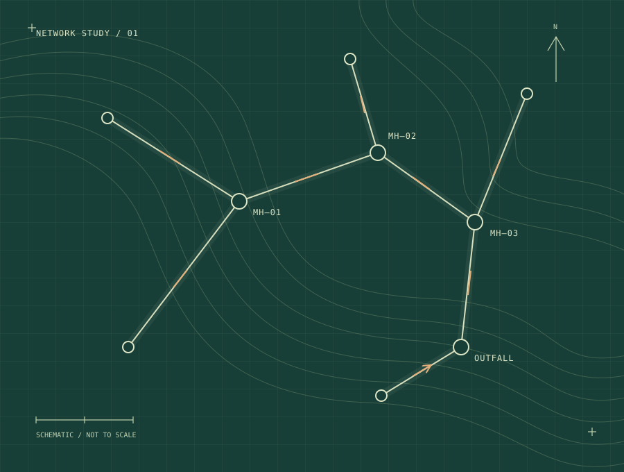

InfraWizard networks
Manual network building, structure/pipe setup, profile extraction, network coloring, layout preparation, and practical handling of InfraWizard limitations.
InfraWizard / Stormwater / Groundwater AHMAD IBRAHIMGIS / INFRASTRUCTURE / CARTOGRAPHY
AHMAD IBRAHIMGIS / INFRASTRUCTURE / CARTOGRAPHY
GIS & STORMWATER NETWORK SPECIALIST
Hydrological Draftsman · InfraWizard Specialist · GOPP Expert Assistant · Infrastructure GIS
5+ years of experience connecting survey data, hydraulic model outputs and CAD drawings with structured GIS networks, engineering deliverables and practical automation tools.

GIS and stormwater network specialist with 5+ years of experience in infrastructure GIS, CAD-to-GIS conversion, InfraWizard-based stormwater and groundwater reduction network preparation, dewatering systems, hydrological drafting support, and engineering deliverables. Experienced in building drainage and groundwater networks from survey data, SewerGEMS/StormCAD outputs, CAD drawings, and GIS datasets, with deliverables including PDF layouts, CAD drawings, GIS geodatabases/shapefiles, KML files, profiles, summaries, and surface/DEM outputs. Registered as a GOPP Expert Assistant, with practical project experience in Egypt and Saudi Arabia, especially Jeddah stormwater, groundwater control, urgent drainage solutions, and alternative drainage routes.
Alongside project delivery, I author geographic atlases and use AI-assisted programming to develop Python/ArcPy tools, desktop utilities, Android GIS applications and web dashboards. My experience covers projects in Egypt and Saudi Arabia, as well as mapping for academic research.
Connecting survey information, hydraulic model exports and spatial data into consistent engineering deliverables.
Manual network building, structure/pipe setup, profile extraction, network coloring, layout preparation, and practical handling of InfraWizard limitations.
InfraWizard / Stormwater / GroundwaterConverting field survey levels, coordinates, pipe diameters, materials, ground levels, invert levels, and depths into structured drainage network models.
Survey data / GIS / CADExtracting and cleaning FlexTable outputs, preparing shapefiles, separating pipe diameter and material fields, and resolving data formats before InfraWizard import.
SewerGEMS / StormCAD / ExcelChecking negative slopes, invert/ground level consistency, pipe sizes, naming conventions, depth values, protection requirements, and engineering presentation quality.
Slopes / Levels / AttributesPreparing geodatabases, shapefiles, CAD drawings, KML files, PDF layouts, network summaries, and map outputs for engineering teams and clients.
ArcGIS / QGIS / CAD / KMLGenerating road/survey-based surfaces from points and centerline/edge data, preparing TIF raster surfaces for use in Civil 3D, SewerGEMS, StormCAD, ICM, and related modeling workflows.
DEM / GeoTIFF / Civil 3DA closer look at the project scope, my contribution and the outputs I supported.

01 — JEDDAH, SAUDI ARABIA
Supported and prepared dozens of urgent drainage solutions, alternative drainage routes, groundwater reduction lines and stormwater layouts in Jeddah using InfraWizard, GIS, CAD, KML and PDF deliverables.
Applications listed in the Software / Tools section of my CV, covering GIS, engineering data, drafting and office work.
Manual network building, structure/pipe setup, profiles, network colouring, layouts and practical handling of software limitations.
Geodatabase design, spatial analysis, map production, terrain/DEM analysis and Shapefile/KML handling.
Python/ArcPy toolboxes, geoprocessing, climate-data workflows, cartographic automation and raster/vector outputs.
Spatial analysis, map production and geographic data handling.
Part of my working GIS toolkit, alongside ArcGIS and QGIS.
AutoCAD 2D, CAD-to-GIS conversion, utility network drawings, engineering plans and profiles.
Layout support and basic surface extraction; survey/road-based surfaces and raster outputs supporting Civil 3D/GIS workflows.
FlexTable extraction and cleanup, pipe size/material separation and Shapefile processing before InfraWizard import.
Prepare model outputs and engineering attributes for network workflows, including FlexTable cleanup and GIS conversion.
Part of my geospatial software toolkit listed in the CV.
Microsoft Office Suite, as listed in my CV.
Google Earth Pro is listed in my CV software toolkit.
Google Earth Engine is listed in my CV software toolkit.
Payazed Menu is listed in my CV software toolkit.
Adobe Illustrator is listed in my CV software toolkit.
Adobe Photoshop is listed in my CV software toolkit.
Adobe InDesign is listed in my CV software toolkit.
Projects developed with AI-assisted programming: GIS and scientific tools, followed by general desktop, mobile and web applications. Development status is identified where applicable.
I use AI tools to help write and adapt code for GIS tools, desktop applications, Android applications and web dashboards with the following technologies.
Geoprocessing · Spatial data validation · Climate-data workflows · Desktop installers · GIS data services · Bilingual software documentation
Six authored geographic atlases registered with the National Library and Archives of Egypt, each with a local deposit number and ISBN.
Reviewed the 2020 edition of the World Atlas, produced by Dar Al-Irshad, Cairo Branch. Participated in producing the Atlas of the Nile Basin Countries — Geological Aspect at the Maps and GIS Division, Department of Geography, Faculty of Arts, Cairo University, 2018. Prepared maps for several scientific research papers, master's theses and doctoral dissertations.
One year of GIS and remote sensing training experience. Delivered online GIS sessions via Zoom in 2021 covering slope aspect, surface roughness, local elevation and alternative terrain shadow mapping.
Infrastructure delivery, independent GIS work and a foundation in geography and cartography.
Vision Dimensions Engineering Consultancy
Independent projects
Bachelor of Arts · Faculty of Arts, Cairo University
Arabic: Native. English: Basic — able to read technical GIS/CAD terms and use software interfaces with support from translation tools.
For GIS, stormwater network preparation, mapping and geospatial development enquiries.
Professional experience, project contributions, software, publications and training in one document.
PDFView / print CVPDFDownload PDFDOCXDownload Word